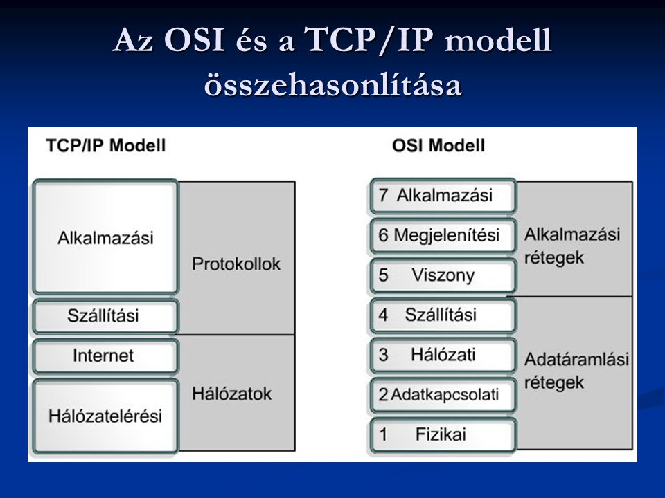

Az OSI-modell (Open Systems Interconnection Model) egy olyan elvi modell, amely egy távközlési vagy számítástechnikai rendszerek kommunikációs funkcióit jellemzi és szabványosítja, tekintet nélkül a mögöttes belső szerkezetre és technológiára. Célja a különféle kommunikációs rendszerek szabványos kommunikációs protokollokkal való átjárhatósága. A leírást gyakran az OSI hétrétegű modellje vagy OSI hivatkozási modell néven is emlegetik. A 7 réteg: fizikai, adatkapcsolati, hálózati, szállítás, viszony, megjelenítési és az alkalmazási.
 Vissza a nyitóoldalra